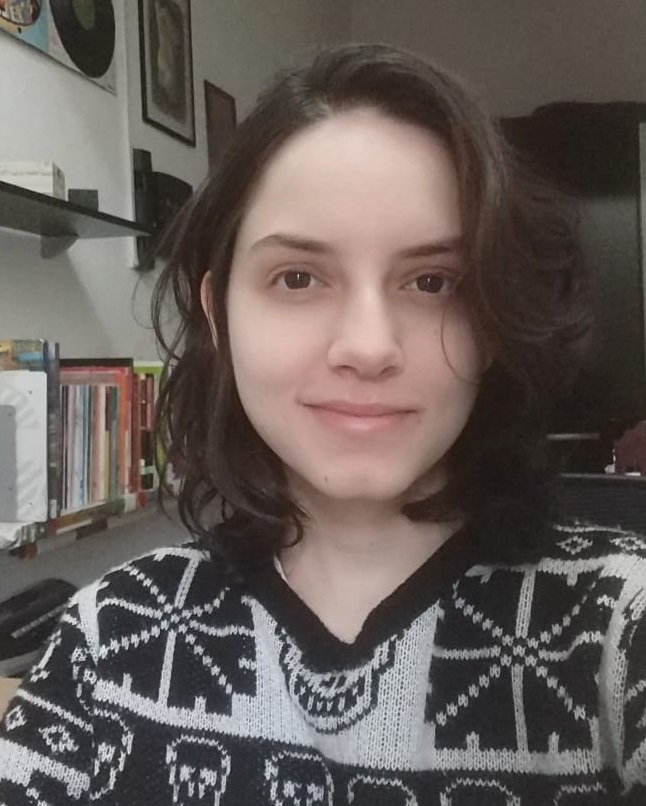

 Graduada em Administração em 2016 pela Anhanguera e estudando Análise e Desenvolvimento de Sistemas na FATEC Sorocaba. Grande interesse em análise de dados e também em desenvolvimento de jogos. No tempo livre gosto de tocar guitarra, ler, jogar e sair com os amigos.